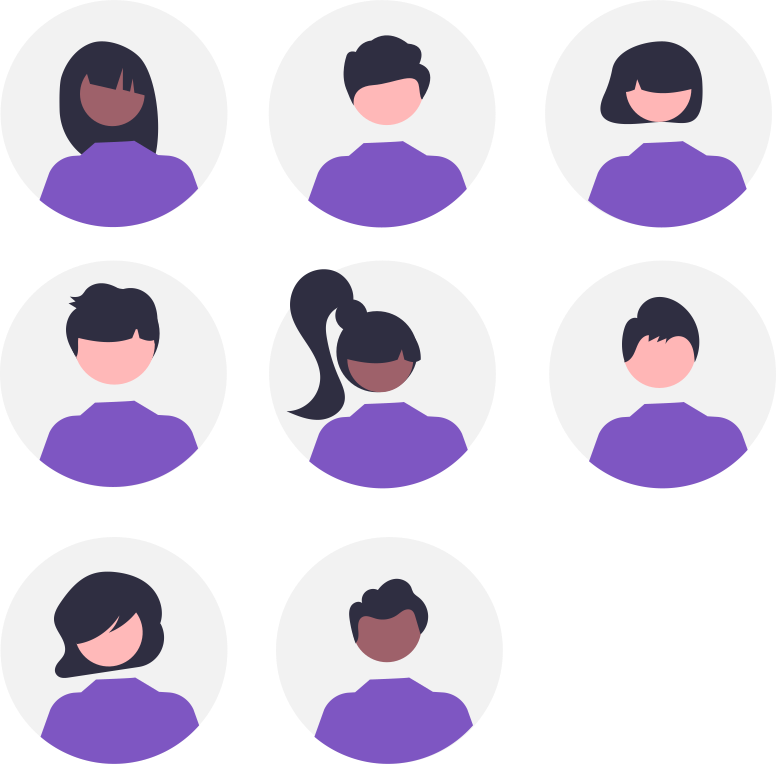

Cahier de texte
Avertissement :⚓︎
Ce site s'adresse au groupe des élèves de première du lycée Notre Dame du Mur qui suivent l'enseignement de spécialité Numérique et Sciences Informatiques.
Du 13/02⚓︎
- S'entrainer pour l'épreuve pratique en réalisant sur Codex les sujets :
- Se préparer pour une évaluation sur les processus et le routage les 06 et 09/03 ;
- Rendre l'exercice écrit Routage et le notebook Capytale n° d941-5158450 ;
- Rendre l'exercice écrit l'OS et les Processus et le notebook Capytale n° 47b0-5553542 ;
- Appliquer aux exercices pratiques :
- Poursuivre GameShell et réaliser les différentes missions afin de compléter votre memo de ligne de commande Capytale n°
1436-5369350;
Du 09/02⚓︎
-
Revoir la partie "Comprendre" du notebook Network-TP1 Capytale n°
e30a-6969721; -
Faire les activités du notebook Protocoles de routage Capytale n° d941-5158450 ;
-
Appliquer aux Exercices sur le Routage ;
- Se préparer pour une évaluation sur les processus ;
- Rendre l'exercice écrit l'OS et les Processus et le notebook Capytale n° 47b0-5553542 ;
- Appliquer aux exercices pratiques :
- Poursuivre GameShell et réaliser les différentes missions afin de compléter votre memo de ligne de commande Capytale n°
1436-5369350;
Du 26/01⚓︎
-
Cliquer sur ce lien https://codespaces.new/phyver/GameShell pour ouvrir un CodeSpace puis saisir dans le terminal
bash start.sh -L fr, réaliser les différentes missions afin de compléter votre memo de ligne de commande Capytale n°1436-5369350; -
Faire les activités du notebook SoC_Processus Capytale n° 47b0-5553542 ;
-
Faire l'exercice écrit l'OS et les Processus ;
- Appliquer aux exercices pratiques :
Du 08/01⚓︎
-
Lire et Faire les activités du notebook Structure_Arborescente Capytale n° 6973-5257312 ;
-
faire l'exercice 1 Correction ;
- faire l'exercice 2 Correction ;
- faire le DM ;
Revoir les dictionnaires ;
-
Finir en pratique l'exercice 5 de l'évaluation autour des tours de Hanoï :
-
Correction de l'évaluation écrite :
-
Rendre les travaux de mémo SQL et SQL-Exercice_Bibliotheque ;
-
S'entrainer encore sur les sites :
-
Appliquer la récursivité aux exercices pratiques Suite de Fibonacci (1), Répertoires sous Linux et Codex/Capytale n°
f002-8216508en conservant une trace de vos codes sur Capytale n° ffd8-4491748 ; -
Finir les exercices pratiques de Codex via Capytale n°
00d9-7948274tout en conservant une trace de vos développements dans le notebook Exos-structures_linéaires-POO Capytale n°8337-8033909; -
Faire des exercices pratiques sur les structures arborescentes ;
Du 05/01⚓︎
-
Reprendre en pratique l'exercice 5 de l'évaluation écrite autour des tours de Hanoï :
-
Rendre les travaux de mémo SQL et SQL-Exercice_Bibliotheque ;
-
S'entrainer encore sur les sites :
-
Appliquer la récursivité aux exercices pratiques Suite de Fibonacci (1), Répertoires sous Linux et Codex/Capytale n°
f002-8216508en conservant une trace de vos codes sur Capytale n° ffd8-4491748 ; -
Finir les exercices pratiques de Codex via Capytale n°
00d9-7948274tout en conservant une trace de vos développements dans le notebook Exos-structures_linéaires-POO Capytale n°8337-8033909;
Du 08/12⚓︎
- S'inscrire sur la Khan Academy et rejoindre la classe TNSI_2025-2026 code 9VCB7ZF9 pour faire les activités d'initiation à la programmation en langage SQL ;
- Faire les activités du notebook SQL-Structured_Query_Language Capytale n° 4799-4903658 ;
- Lire le notebook BDR-Bases_de_Donnees_Relationnelles Capytale n° 0d17-4903819 ;
- Regarder les vidéos :
- Faire SQL-Exercice_Bibliotheque ;
-
Rendre les travaux de mémo SQL et SQL-Exercice_Bibliotheque ;
-
S'entrainer encore sur les sites :
-
Appliquer la récursivité aux exercices pratiques Suite de Fibonacci (1), Répertoires sous Linux et Codex/Capytale n°
f002-8216508en conservant une trace de vos codes sur Capytale n° ffd8-4491748 ; -
Finir les exercices pratiques de Codex via Capytale n°
00d9-7948274tout en conservant une trace de vos développements dans le notebook Exos-structures_linéaires-POO Capytale n°8337-8033909;
Du 24/11⚓︎
-
Découvrir la programmation récursive Capytale n° 1101-4437530 ;
-
Proposer une version récursive pour la fonction
longueur(liste)qui renvoie la longueur de la liste chaînéelistetelle que définie dans le DM sur les listes chainées Capytale n° 747d-4440073 ; -
Appliquer la récursivité aux exercices pratiques Suite de Fibonacci (1), Répertoires sous Linux et Codex/Capytale n°
f002-8216508en conservant une trace de vos codes sur Capytale n° ffd8-4491748 ;
-
Rendre Structure Linéaire de Données :
-
S'entrainer en réalisant des exercices pratiques de Codex via Capytale n°
00d9-7948274tout en conservant une trace de vos développements dans le notebook Exos-structures_linéaires-POO Capytale n°8337-8033909;
Du 03/11⚓︎
-
Correction de l'évaluation POO partie 1, partie 2Correction partie 2, partie 3 ;
-
Finir Structure Linéaire de Données :
-
Faire en DM la partie 1 de POO + Liste la partie 3 POO + Pile et le DM Pile-File ;
-
S'entrainer en réalisant des exercices pratiques de Codex via Capytale n°
00d9-7948274tout en conservant une trace de vos développements dans le notebook Exos-structures_linéaires-POO Capytale n°8337-8033909;
Du 16/10⚓︎
- Evaluation POO ;
- Structure Linéaire de Données :
-
S'entrainer en réalisant des exercices pratiques :
programmeur.saisit(code);- La classe Chien ;
- Géométrie vectorielle en POO Maths ;
- La domotique (I) ;
- La domotique (II) ;
- Carrés semi-magiques (POO) Tableaux ;
- La Belote Dictionnaires;
- Programmer un robot (2) Chaines de caractères ;
- Mme Tortue et M. Lièvre font la course Structure linéaire ;
- Jeu de la ronde (2) Structure linéaire ;
- Évaluation d'une expression postfixe Piles ;
- Filtre des nombres positifs d'une pile Piles ;
- Parenthésage correct Piles ;
- Expression bien parenthésée (2) Piles;
- File avec deux piles Structure linéaire ;
- Autour des files Files ;
-
Découvrir l'interface graphique Dear PyGui à l'aide de sa documentation et de la playlist de Frédéric LEULEU et d'autres tutoriels comme :
Du 26/09⚓︎
-
Retour sur le T.A.F. ;
-
Synthèse de Programmation Orientée Objet Capytale n° af58-4011978 ;
-
Explorer les environnements de développement associés aux projets de la fête de la science et y appliquer de la POO...
-
S'entrainer en POO en réalisant des exercices pratiques :
programmeur.saisit(code);- La classe Chien ;
- Géométrie vectorielle en POO{target=blank} _Maths ;
- La domotique (I) ;
- La domotique (II) ;
- Carrés semi-magiques (POO) _Tableaux;
- La Belote{target=blank} _Dictionnaires;
- Programmer un robot (2){target=blank} _Chaines de caractères;
Les 19 et 22/09⚓︎
-
Retour sur le T.A.F. ;
-
Introduction à la Programmation Orientée Objet Capytale n°914d-3933344 ;
-
Poursuivre l'introduction à la Programmation Orientée Objet ;
-
S'entrainer en POO en réalisant des exercices pratiques :
programmeur.saisit(code);- La classe Chien ;
- Géométrie vectorielle en POO{target=blank} _Maths ;
- La domotique (I) ;
- La domotique (II) ;
- Carrés semi-magiques (POO) _Tableaux;
- La Belote{target=blank} _Dictionnaires;
- Programmer un robot (2){target=blank} _Chaines de caractères;
Le 12/09⚓︎
-
Retour sur le travail demandé : Capytale n°
cda0-6985546; -
Recommandations de programmation appliquées à l'exercice série de notes Capytale n°4bbe-3858950 -> expérimenter les solutions du notebook en complétant le code et la documentation des fonctions partiellement données
- Finir le notebook des recommandations de programmation appliquées à l'exercice série de notes sur Capytale n°4bbe-3858950 et le rendre pour le 16/09 ;
Du 05/09⚓︎
- Organiser un classeur numérique pour la NSI sur GitHub -> Reprendre en main l'environnement web de Visual Studio Code depuis votre iPad et depuis un des PC du labo de SI pour gérer vos fichiers ;
- Notion de paradigme de programmation Capytale n°
cda0-6985546-> regarder rapidement le début de la vidéo et faire les activités de révisions associées ;
Revoir les bases de la programmation en Python avec l'application en ligne futurcoder -> Maintenir un mémo personnel au format
.ipynbou.mdrésumant vos apprentissages algorithmiques et leur programmation en Python3 ;
- Finir les activités de révisions associées à la Notion de paradigme de programmation impérative structurée et procédurale en Python Capytale n°
cda0-6985546pour le 08/09 ;